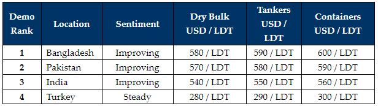

inWeekly Demolition Reports19/07/2021

Demo markets continue their upward trajectory this week and the USD 600/LDT barrier, as suspected last week, was indeed breached on a number of select units.This may be due to a general paucity in the overall supply of tonnage over these quieter summer / monsoon months, whilst local steel plate prices have regained momentum of late, especially after stalling a few weeks ago!
Just how much longer this momentum will last remains to be seen. But for now, fundamentals for this seemingly sustained rally (of demand and pricing) from sub-continent End Buyers is clearly far from being satisfied at this time.
Bangladesh leads the way once again with a stellar showing on levels this week, while Gadani Recyclers remains hot on the heels of their Chattogram competitors. Meanwhile, India remains positioned some ways behind its sub-continent recycling contemporaries, even though Alang Buyers are starting to narrow the gap (once again), especially after a downward trend that prevailed over the last few weeks. Lastly, the Turkish market remains suspended and relatively unchanged since last week, given the onset of Eid Holidays until July 26th, and an overall quieter time coming up for this market.
Reopening days loom in the UK, with several states in the U.S. already starting to fully re-open, as the vaccine push ramps up so that economies can firm up again and some form of normality can finally ensue. However, the troubling Delta variant is starting to take hold and resuming the spread once again, especially amongst those who are yet to be vaccinated.
Of course, there is still some resistance in certain countries where vaccine supplies and uptake have yet to fully take hold, but it will be interesting to see how those countries that are reopening, fare in the near future, as the world looks to put the worst of the pandemic behind
For week 29 of 2021, GMS demo rankings / pricing for the week are as below.

Download PDF
Source: GMS